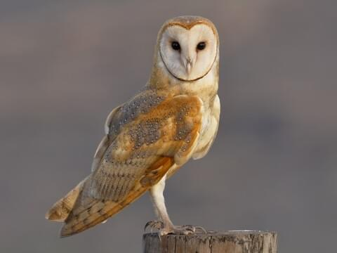
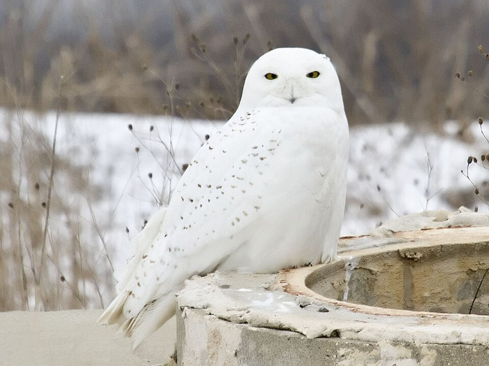
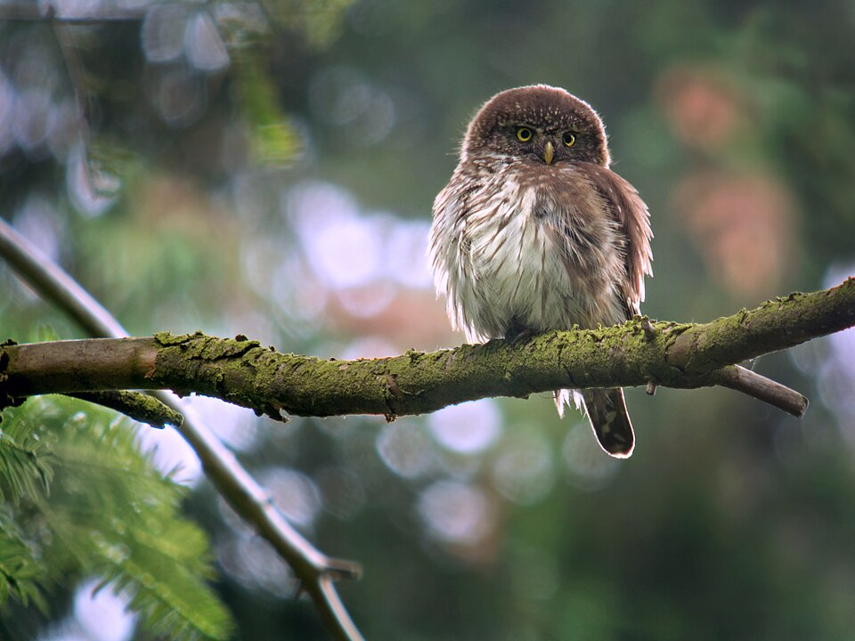
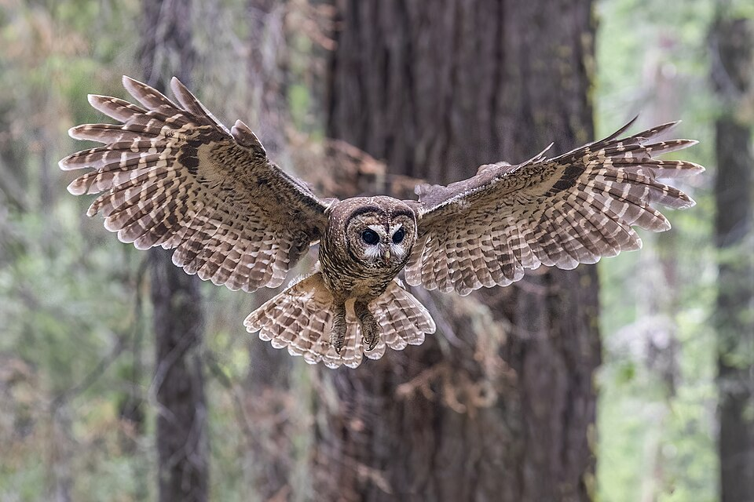
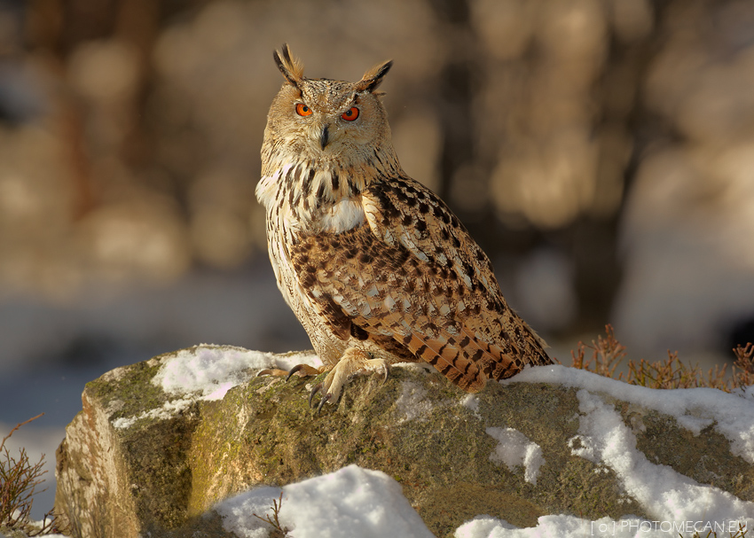

This page is about Owls and its different types.
Ghostly pale and normally strictly nocturnal, American Barn Owls are silent predators of the night world. Lanky, with a whitish face, chest, and belly, and buffy upperparts, this owl roosts in hidden, quiet places during the day. By night, they hunt on buoyant wingbeats in open fields and meadows. You can find them by listening for their eerie, raspy calls, quite unlike the hoots of other owls.

The snowy owl (Bubo scandiacus) is a large, Diurnal (active during the day) bird of prey easily recognized by its thick, primarily white plumage, bright yellow eyes, and lack of obvious ear tufts. As the heaviest owl species in North America, they weigh between 3 and 7 pounds, with females generally larger and more heavily barred with dark brown spots than the mostly white males. They are native to the Arctic tundra, where they nest on the ground and rely on intense, often 24-hour daylight to hunt lemmings and other small mammals using a specialized "watch-and-wait" technique.

Pygmy owls (genus Glaucidium) are tiny,15–18 cm, long-tailed owls with rounded heads lacking ear tufts. Known as diurnal or crepuscular hunters (active during the day), they are ferocious predators that eat insects, small mammals, and songbirds. They feature yellowish eyes and distinct "false eye-spots" on the back of their heads.

The spotted owl (Strix occidentalis) is a medium-sized, nocturnal raptor known for its dark brown plumage, white spots, and dark eyes. It inhabits mature, old-growth forests in western North America, where it preys on small mammals like flying squirrels and woodrats. These territorial, monogamous birds are threatened by habitat loss and competition with barred owls.

The Eurasian Eagle Owl (Bubo bubo) is one of the largest and most powerful owl species in the world. Known for its striking appearance and deep, booming call, this nocturnal apex predator is widely distributed across Europe and Asia.
